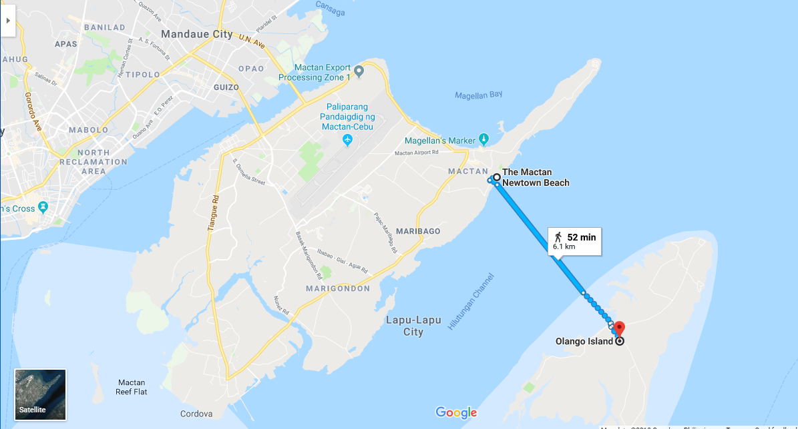

Weather Status
Moderate
Wind advisory in East ChannelAlert Feed
4 Active
1 critical needs watchLive Fleet Map
18 Tracked
GPS stream stableBoats at Sea
12
6 currently docking/in-portLive Fleet Monitoring Map
Read Only
Boat 08 • Marigondon Port → Olango
Boat 03 • Mactan Port → Olango → Caohagan → Sulpa
Sea State: Moderate
Signal: Stable
Alert Feed Timeline
View only- ALT-904 escalated in South Passage2m ago
- Boat 03 speed drop detected9m ago
- Wave advisory extended (East Channel)14m ago
- Geo-fence event acknowledged by Station 222m ago
- Visibility bulletin posted by coastal watch38m ago